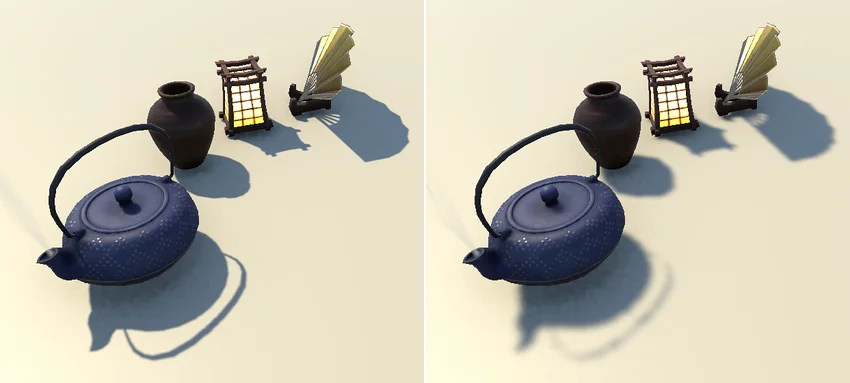
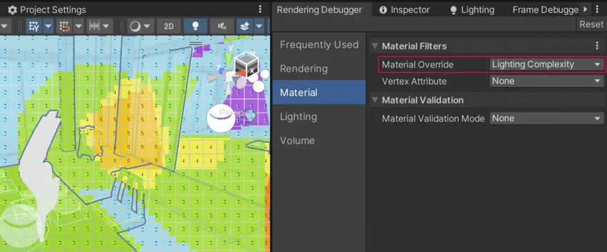

This page describes optimization techniques that help you make shadow rendering faster in your project.
Factors that affect the shadow rendering time include:
The number of visible objects that cast shadows. This number depends on the Max Distance property.
The number of visible objects that receive shadows.
The number of shadow-casting lights.
The Cascade Count property value and the sizes of the cascade splits.
The shadow resolution of the main light and additional lights.
The Soft ShadowsA shadow property that produces shadows with a soft edge. Soft shadows are more realistic compared to Hard Shadows and tend to reduce the “blocky” aliasing effect from the shadow map, but they require more processing.
See in Glossary property.
The following sections describe how to use those and other settings to optimize shadow rendering performance.
Use one of the following techniques to optimize shadows cast by the main light.
Use the shadow cascades feature to improve the visual fidelity of shadows without increasing the shadow map resolution.
Consider the performance impact of shadow cascades when selecting the Cascade Count value.
Using the Soft Shadows property lets you achieve higher visual fidelity with lower shadow resolution values.
The Soft Shadows property might have a significant performance impact on platforms that use tile-based rendering, such as mobile platforms and untethered XR platforms. If your target platform uses tile-based rendering, profile your application to determine the performance impact of this setting.
You can use a combination of a lower shadow resolution and the Soft Shadows option as an artistic technique. While high shadow resolution makes shadows more detailed, it also makes the shadows look sharp, which might not suit all artistic styles.
For example, in the following illustration, the image on the left has a shadow resolution of 4096 pixels, while the image on the right has a shadow resolution of 1024 pixels with the Soft Shadows option enabled.

For more information about optimizing the resolution and the maximum distance of shadows from the main light, refer to Configure shadow resolution in URP.
Use one of the following techniques to optimize shadows cast by additional lights.
To create a shadow map for a point light, Unity captures the scene in six directions. The performance impact of this operation is comparable with rendering shadows from six spot lights. On mobile platforms, this uses a significant amount of the available resources per frame.
Reduce the number of shadow-casting point lights on mobile platforms, or avoid them completely.
For more information, refer to the following pages:
To improve performance, you can use scripting to turn shadow-casting real-time lights off depending on the distance to the camera or other conditions. To do this, use the Light.enabled property.
To avoid light popping, you can fade in and out the intensity property of a light.
For an example of this technique, refer to the DynamicLightController.cs script which is attached to point lights in outdoor lanterns in the Garden scene in the Universal 3D sample project.
In areas where objects are mostly static, point or spot lights with light cookies can serve as a substitute for lights that cast real-time shadows.
To configure a light cookie, use the Cookie property of a Light component.
For more information, refer to Introduction to cookies.
The Light Explorer window provides a convenient overview of all lights, reflection and light probes, and objects with emissive materials in the scene. Use this tool to quickly find lights with certain properties in the Scene.
This section contains general optimization techniques that are not specific to the main or additional lights.
The number of real-time shadow-casting objects has a significant impact on shadow rendering performance.
To exclude an object from casting shadows completely (both baked and real-time shadows), do the following:
On a GameObject, go to Mesh Renderer > Lighting.
Set the Cast Shadows property Off.
To configure a GameObject to cast only baked shadows, use the Shadowmask lighting mode.
The Shadowmask lighting mode lets you improve shadow rendering performance by combining baked and real-time shadows at runtime.
For general information about the Shadowmask lighting mode, refer the page Lighting Mode: Shadowmask
Unity uses the following conditions to determine whether a light or a GameObject contributes to the Shadowmask:
The light mode of a light must be Mixed.
The light must be configured to cast shadows (the Shadow Type property of a light must not be No Shadows).
A GameObject must be static.
To view the existing Shadowmask in the Scene view:
Maximum four lights can have an overlap in a Shadowmask since it uses four channels (r,g,b,a). If an area has more than four overlapping mixed lights, Unity switches additional lights from mixed to baked mode.
To see how many lights affect a certain area, use the Lighting Complexity view in the Rendering Debugger.

To achieve the best combination of visual fidelity and performance, use the Shadowmask mode in combination with Light Probes.
On medium and lower tier mobile platforms, the Shadowmask mode might be a good choice from a performance perspective.
On higher tier mobile platforms or PC and console platforms, consider using the Distance Shadowmask mode to achieve higher visual fidelity.
For more information, refer to the page Lighting Mode: Shadowmask.
When using the Shadowmask lighting mode, you can configure certain GameObjects to contribute to the baked shadows and not cast real-time shadows. Follow these steps:
Go the Project Settings > Quality and set the Shadowmask Mode property to Shadowmask.
In this mode, Unity uses baked shadows for every GameObject that has the Contribute Global Illumination property enabled.
On a GameObject, in the Mesh Renderer component, set the Cast Shadows property to On.
In the Mesh Renderer component, enable Contribute Global Illumination.
Generate lighting for the changes to take effect.
Now Unity renders this GameObject with the baked shadow at runtime regardless of the distance to the camera.
To cast a simple shadow from an object with a complex mesh, follow these steps:
Create a simplified version of the mesh with fewer polygons.
Assign any material to the simplified mesh. The material doesn’t matter because Unity doesn’t render the simplified mesh.
On the original mesh, set the Cast Shadows property to Off.
Place the simplified mesh in the same position as the original mesh.
On the simplified mesh, set the Cast Shadows property to Shadows Only.
With this configuration, Unity renders the original mesh but uses simplified mesh to render the shadow.
Use the following Unity tools to profile lighting and shadow rendering:
If you need more detail, use the platform-specific profilers and debugging tools available for your target platform. Refer to Profiling tools for more information.